we will make a directory called git tutorial and
there is where will be working through out this tutorial
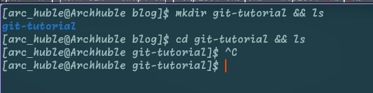
creating a Directory moving into the directory
if working on linux machine run the commands above to create and
list the directories, else if you are working on a windows machine
just create the windows manually
What is Git ?
In the world of Software develepment , managing changes to code of
time is crucial. This is where Git comes in . Git is a version
control sytesm, a tools that helps devs track , manage and collabore
on changes efficiently.
But what excatly is a version control system?
A version control system is a software tool that helps developers
keep track of changes in their codebase. It allows you to save
different versions of your project, go back to previous versions
when need . and collaborae with oher teams members
There are several version control out there i.e:
Subversion
Mercurial
Perforce
Bazaar
how ever git is the most popular and widly used one . But in this
blog ,Well be diving deep into Git-how it works , why it's important
and well also expolore github, a web platform build around Git
Installing Git
installing git
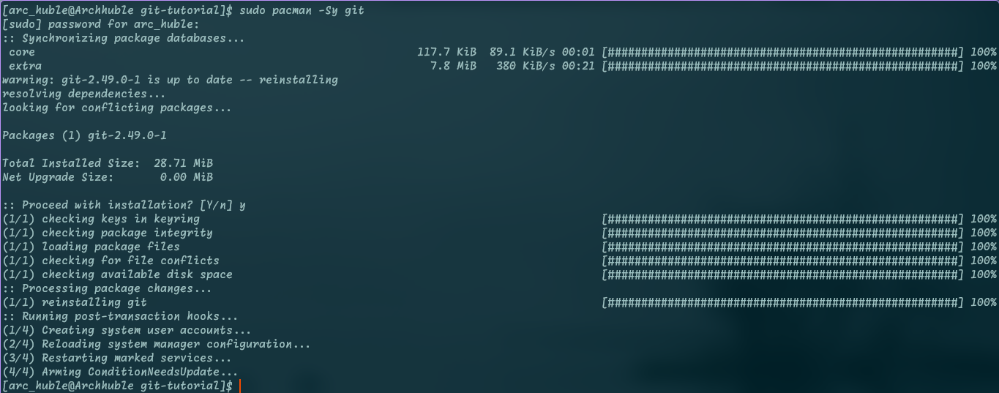
Git Installation on Arch linux
if your are on windows machine visit git offical web page and
download it from there
check if git is intalled on your machine
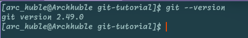
checking if git is installed
you should get the result a showing git version if not git was
not proply installed
Configuring Git
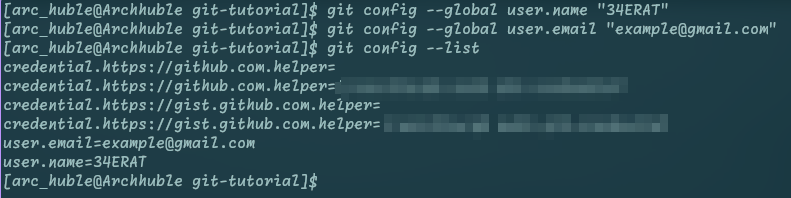
configure git user name and email and list the set configuration
command to configure you core editor
Instiallzing a Git repostitory
what is a Git repo ?
a Git repository is a Virtual storage area for a
project that includes files and history of changes of those files
There are two types o repository this include
Local and Remote repectively
Local Repository: is a repo that is on you local
machine this includes a .git folder used to store
git relate metadata
Remote Repository: is a repo that is hosted on the
cloud i.e github this includes a .git folder used
to store git relate metadata
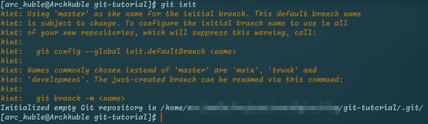
Initialization of git local repository
Adding files to the staging area
before we go any father lets create a simple html file for this demo
well name it index.html for the sake of this bog
In my case i will be using nvim for as my editor feel free to use
the editor of you choise
create a file
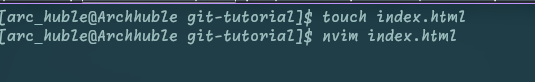
commands to create and file and open files
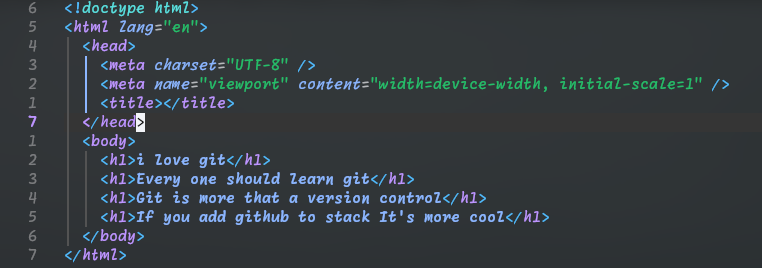
content of our html file
staging the file
checking untracked files and staging them
Commiting changes
what is a commit?
a commit in Git are the building block units of a Git project time
line
You can think of them as snapshots of your project at a specific
moment in time
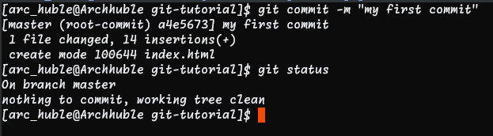
commit the index.html file
the option -m is called the flag and stands for the
commit message
after commiting you notice your working tree is clean and git status
doesn't return any files this means you commit was a success
Branches
what is a Git Branch ?
git i a separate work space that allows you to try new ideals on
your project and fixs bugs with out affecting the orignal work
you can also this it like a parallel universe if you like
Common Reasons to use branches
expriment new ideas
bug fixes
development of a new feature
lets Dig in
Creating && Viewing all Branches
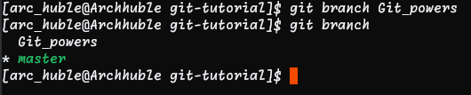
creating and listing branches
the * symbol points your current branch
Swithing Active Branches
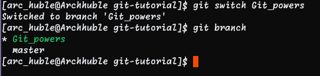
switching and checking the active branch
Merging a branch
before we get into the marging lets do some modification on our
original file wile in Git_powerbranch
don't worry lets just add two lines of code
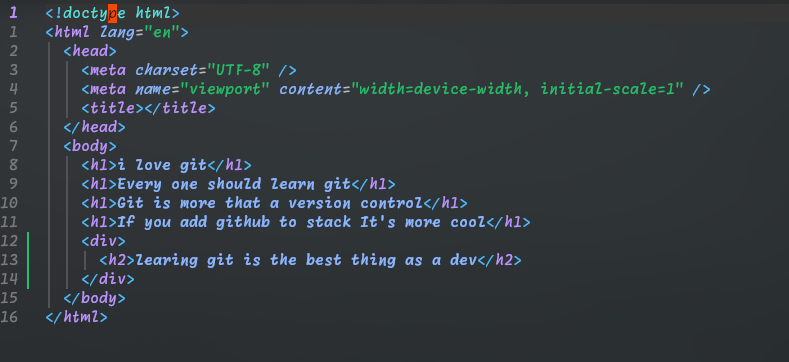
added two tags
commit you changes and switch to master
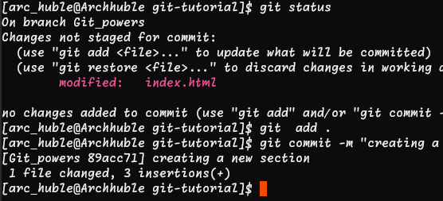
commiting the changes before swithing
Note: after switching to master the file
changes back to the original state and the modification made are
not visible from the master branch
to see those changes on your master branch you must mergin the
Git_power to the master branch
mergin the two branches
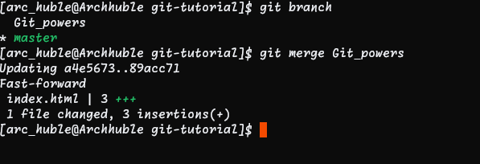
merging the branches
notice after merging the change of the
Git_power branch are now visible to the
master
branch
Deleting a Branch
since we have merged the two branches and now the changes are in
the master branch
we don't need the branch again now its safe to delete the branch
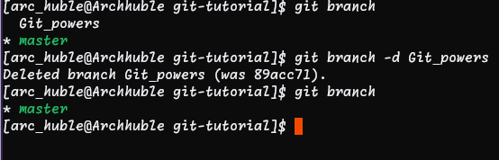
merging the branches
That's it you have succeffully learned the common use case of
git and all its most used commands